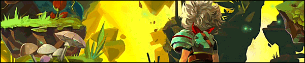

Bastion is an action RPG game that redefines storytelling in games, with a reactive narrator, "The Stranger", who marks your every move as you discover the secrets of the Calamity; a surreal catastrophe that shattered the world to pieces.
Characters

The Kid
The Kid is a survivor of the calamity; the main character and silent protagonist of the game. The Kid's most defining traits are his determination and sense of duty. Due to his solitary past, The Kid tends to be stoic yet compassionate. He invites any survivors he does encounter to the Bastion without hesitation. The Kid is proficient with a variety of weapons and aspired to join the Marshals after completing his second term on the Rippling Walls.
Rucks, the Stranger
"Now The Kid sees somethin' stranger still; his mind races.
Did anyone else survive?
Sure enough, he finds another. He finds me."
The Kid meets Rucks for the first time when he arrives at the Bastion. He is a survivor of the calamity. After the Calamity, the original cores powering the Bastion have inexplicably been rendered inert. The Stranger sends The Kid to scavenge for more in ruins of Caelondia.
Zia
Zia is a survivor of the Calamity. She is an ethnic Ura who was born and raised in Caelondia, and as a consequence, knows little of her Uran heritage. Shortly after the Kid falls into Prosper Bluff, he is startled by the sound of a woman's voice. The melody leads the Kid to Zia's campsite, where he convinces her to return with him to the Bastion. Zia brings her guitar and her father's Hidebound Journal, which she is unable to read herself. She pitches a tent near the Monument and is supposedly a skilled cook.
Zulf
Zulf is a survivor of the Calamity. As an ura from the Tazal Terminals, Zulf moves to Caelondia as an ambassador of peace and good will. The Kid finds Zulf in the Hanging Gardens, staring helplessly into the sky. Because the Kid is the first survivor Zulf has encountered, particularly amongst the many petrified victims in the Gardens, Zulf is easily convinced to return to the Bastion.
Enemies
- Squirt
- Gasfella
- Scumbag
- Pecker
- Doppelganger
- Pincushion
- Rattle-tail
- Ura Warriors
- Stabweed
- Vineapple
- Swampweed